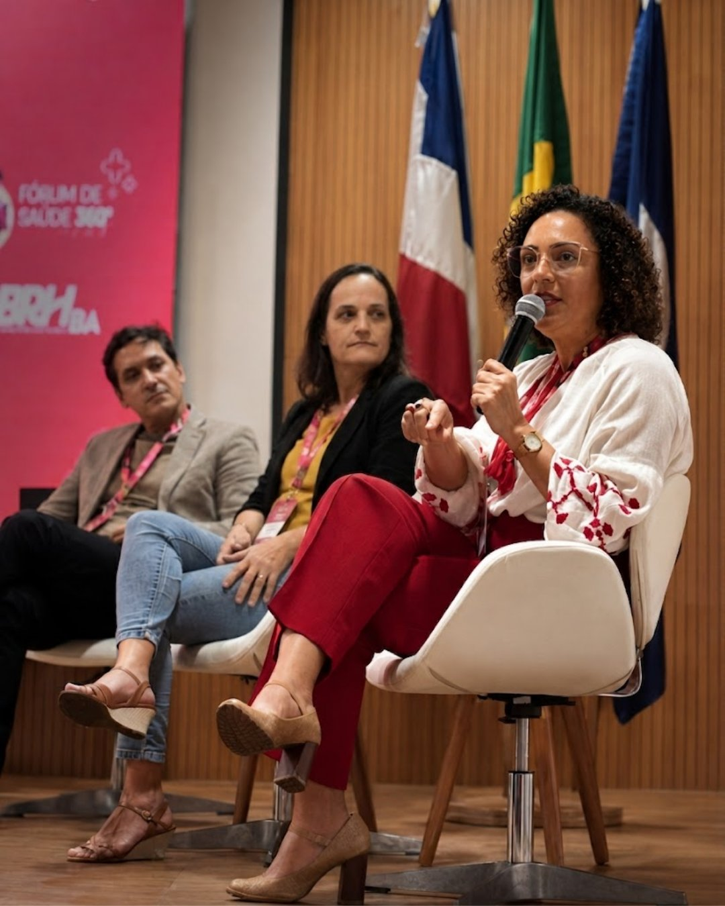
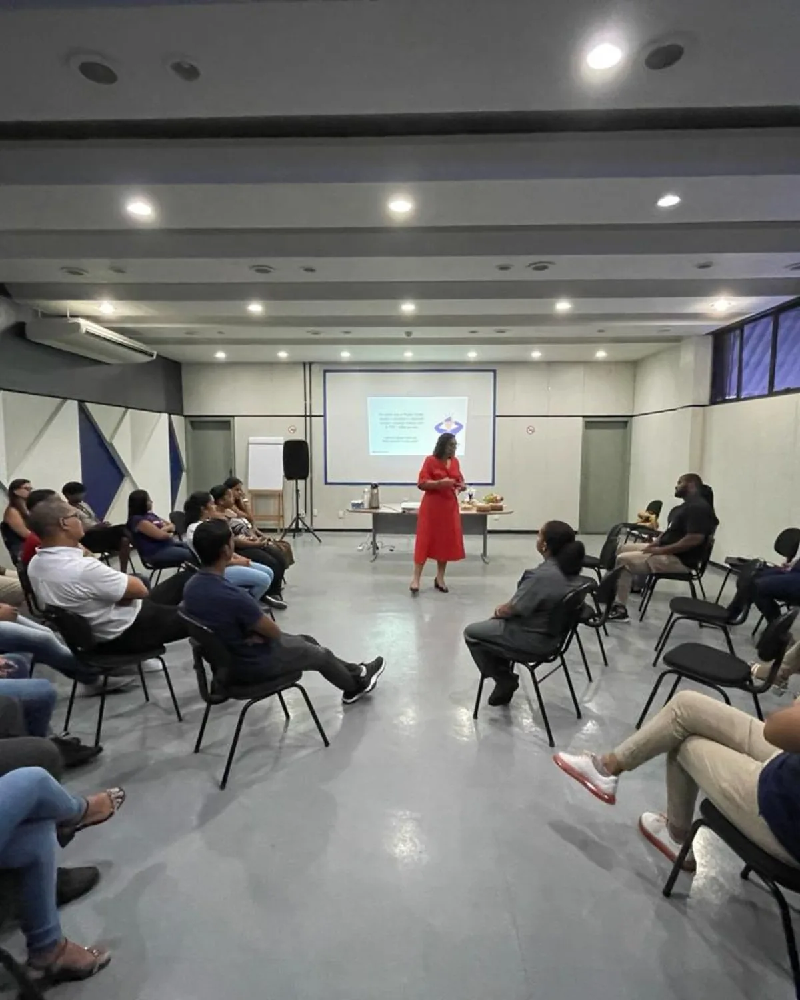
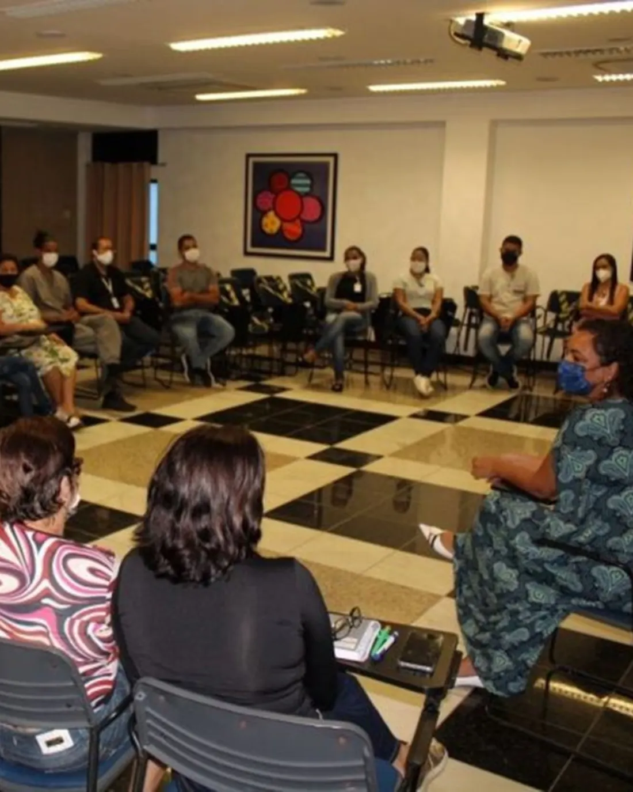
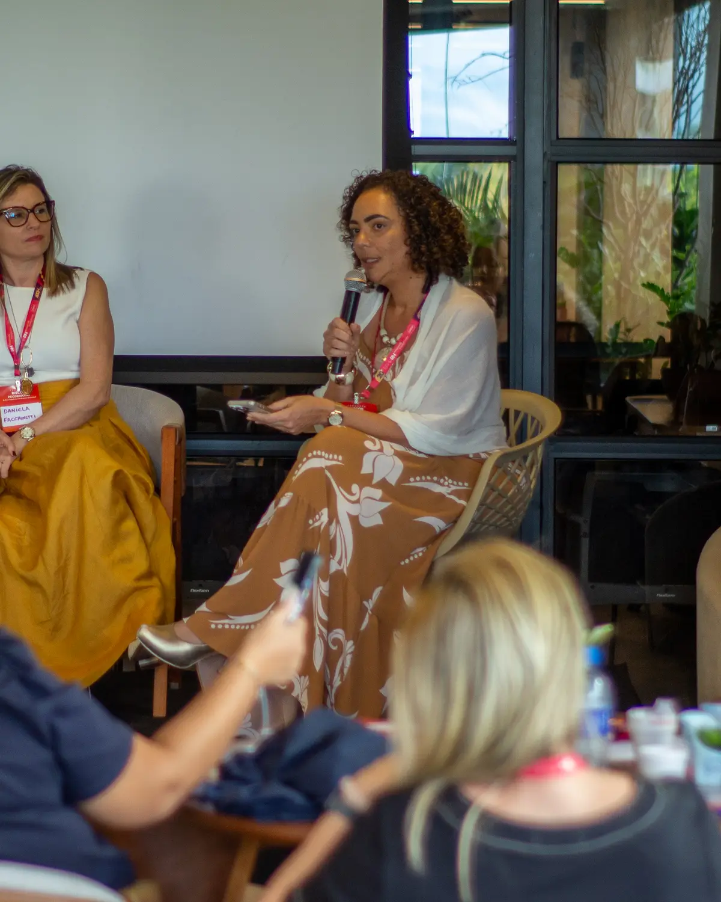

Online
For teams that want to go deeper on a specific topic in a dialogue format, with clinical facilitation. Includes support material in PDF and a certificate of participation.
Proposal based on scope
Sessions for small groups of leaders, HR or managers who need to discuss real situations, name what is happening and leave with practical tools.

"It is not a talk. It is a conversation with someone who knows what is happening and is not afraid to name it."
The Circle is smaller and more participatory than a talk. The group brings questions, discusses anonymized cases and builds a shared understanding with clinical facilitation.
Each session is designed around the client's situation. These are the topics that come up most often in requests from companies and leadership teams.
For teams that want to go deeper on a specific topic in a dialogue format, with clinical facilitation. Includes support material in PDF and a certificate of participation.
Proposal based on scope
For companies and organizations in the metropolitan area. Same deliverables as the online format, with presence and group dynamics in the room.
Proposal based on scope
Four sessions in sequence or over an agreed period. Includes material for each session, a certificate and a copy of the book Quando o Trabalho Dói for the client company. Online or in person.
Proposal based on scope
Sessions held in auditoriums and on panels, from the Fórum Saúde 360 to circles on occupational health.



A talk aligns many people at once; the Circle works on what comes up afterwards. Choose a talk when the goal is to build a common language with a large audience, and a Circle when the group already knows the subject and needs to discuss what is happening now.
From 8 to 25 people. Below 8, the group loses the variety of cases; above 25, there is not enough time for everyone to speak and the conversation turns into an audience.
Online, from an hour and a half to two hours. In person, about two hours. There is also the four-session program, monthly or every two weeks.
Yes, a certificate of participation in every format. The support material in PDF comes with it, and the four-session program includes material for each session.
Yes, online or in person. The in-person format serves companies and organizations in the Salvador metropolitan area; for other cities, the format is agreed case by case.
No. Cases are discussed anonymously, and facilitation exists precisely so that the conversation happens without exposing participants.
In the initial conversation, based on what the client describes: what prompted the request, what has already happened in the team and what leadership needs to resolve. The list of recurring topics on this page is usually the starting point, not a closed menu.
A 27-page guide (in Portuguese) for professionals who need to assess, with method, the relationship between mental disorders and the work context. Based on Brazilian Federal Council of Medicine Resolution 2,323/2022 and NR-1.
Get the free guide →
Send the context, group size and priority topic. The proposal comes back with a recommended format, duration and next steps.